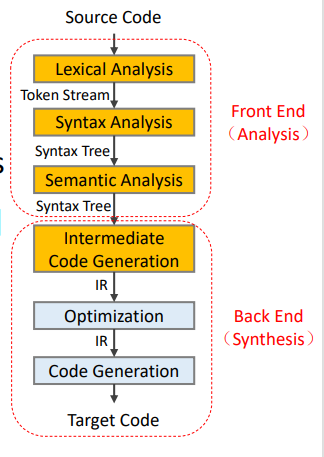
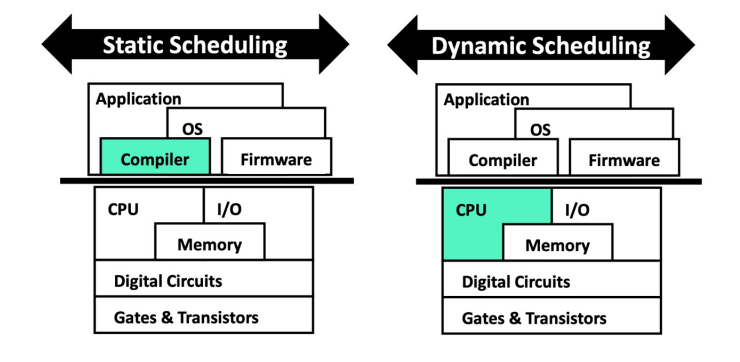
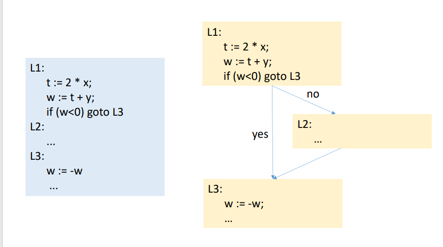
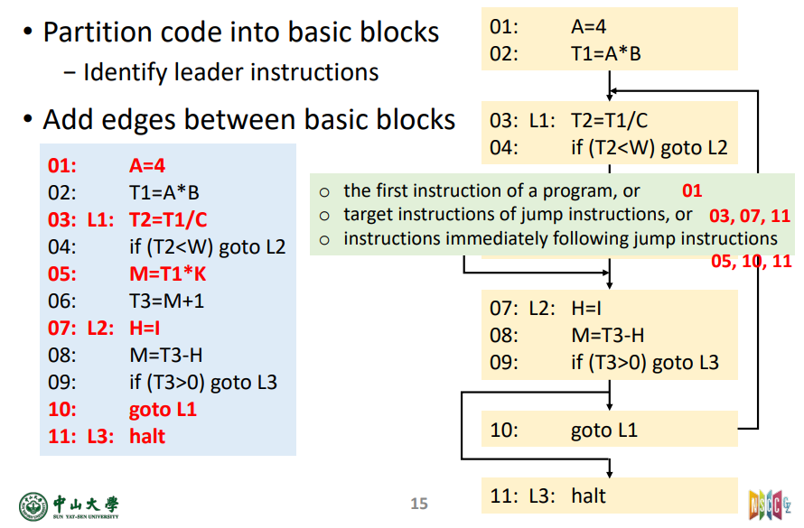
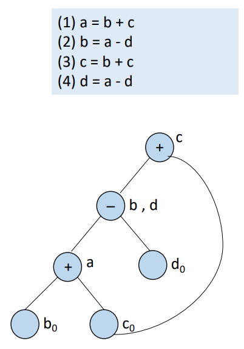
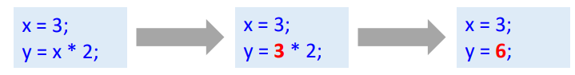
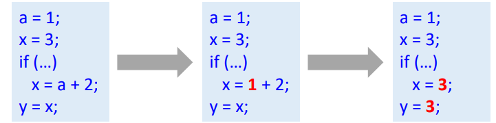
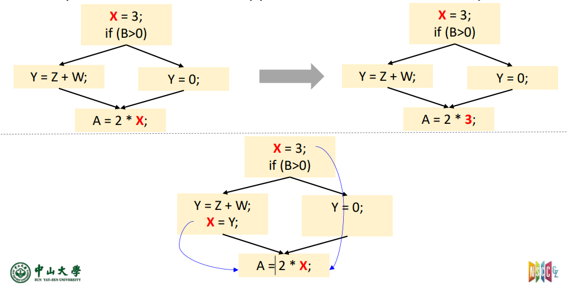
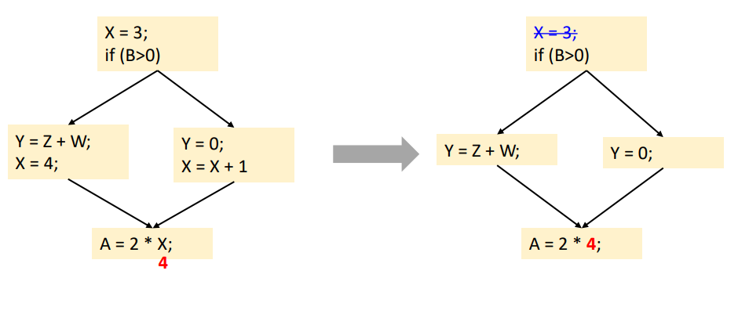

6-代码优化
代码优化
代码优化
IR -> IR，正确性是前提
优化的种类
布局相关（Layout-related transformations） ，优化的是数据和代码内存放置的地方。目的是充分利用空间局部性。
代码相关（Code-related transformations），优化生成的代码，目标是执行最少数量代价高的指令。
强度削减（strength reduction），比如 \(A=2*a\) 改成 \(A=a<<1\)
废弃代码移除（dead code elimination）
代码调度（code scheduling），更容易并行化
数据预取（data prefetching）

指令调度（Instruction Scheduling）
调度：寻找无依赖性的指令
静态（Static）：编译时由编译器完成
动态（Dynamic）：运行时由 CPU 完成 要寻找依赖无关的指令重叠计算，有依赖的要隔开若干个时钟周期 实行调度的能力依赖于
程序特性
硬件特性

循环展开（Loop Unrolling）
复制循环体多次，然后调整循环代码
增加有效指令数
消除分支，共同调度
限制
每次展开减少的时间少了
代码尺寸变大，可能对代码缓存影响，带来寄存器压力
编译器本身的限制
控制流分析（Control-Flow Analysis）
控制流图（Control-Flow Graph, CFG）表示出程序运行可能经过的路径，我们需要提前构造出基本块才能得到这个图。
基本块（Basic Block）
基本块进出口唯一，第一条进入，最后一条出。
基本块不能再划分，要么全运行，要么就不执行这个基本块。
本地优化受到基本块作用域的限制，全局优化跨越基本块。
控制流图（Control-Flow Graph）
节点代表基本块
边代表基本块之间的执行流
控制语句引入了控制流的边

构造 CFG
分解为基本块，基本块有 leader 和在下一个 leader 前紧跟着的指令。需要分辨出指令的 leader
首条指令
跳转的目标
紧跟跳转的指令
连接基本块，跳转，顺序执行

局部和全局优化
局部优化（Local optimizations）：只在一个基本块中优化
常量折叠
公共子表达式删除
全局优化（Global optimizations）：跨越基本块
局部优化
公共子表达式删除：避免重复计算
死代码删除（Dead Code Elimination）：结果从不使用的代码删除
基本块的 DAG
有向无环图（DAG，directed acyclic graph）
构造
为变量初始值创建节点，叶子
为声明语句创建节点
- 用运算符标注节点
某些为输出节点

代数恒等式
使用数学规则
\(a*1=a\)，\(a*0=0\)，\(b\&true=b\)
\((a+b)+c=a+(b+c),a+b=b+a\)
强度削减
用花销更小的运算来代替花销大的计算
\(x=y/8\) -> \(x=y>>3\)
\(y=y*8\) -> \(x=y<<8\)
\(x^2\) -> \(x*x\)
\(2*x\) -> \(x+x\)
常量折叠
1 |
|
改成
1 | x = 200; |
常量传播
局部常量传播 LCP（Local Constant Propagation）

有一些优化既有局部优化也有全局版本
全局常量传播（Global Constant Propagation，GCP），更强大但是更复杂

全局优化
将优化扩展到数据流而不是一个基本块
沿着所有路径，上一条赋值需要是
X=C哪怕只有一个路径不是，优化都必须停止

全局常量传播
全局优化必须保守来保证正确性，比如考虑数据流（控制流）

